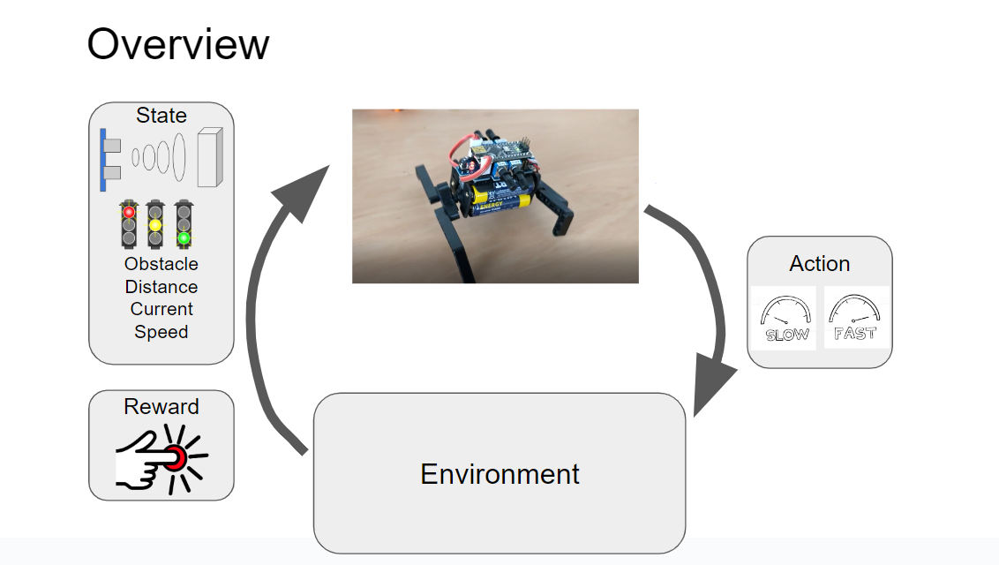

Seoul, South Korea • +8210-3805-5721 • wwchung91@gmail.com
Professional Objective - Dedicated AI researcher with a passion for pushing the boundaries of artificial intelligence to solve complex problems. My interest lies in the field of Artificial Intelligence, Computer Vision, Deep Learning, Machine Learning, and Robotics.
Thesis titled "Moving object detection under an non-stationary camera using a improved background model with foreground clues". Focused on Computer Vision, Machine Learning, Pattern Recognition.
Threads in Intelligence and Information Internetwork
Managed and developed robotics products that include computer vision, machine learning, and conversational AI. Mainly focused on creating an open-sourced humanoid platform.
[Developer] Created an open-source robot head research platform with a 2D camera. Developed a hardware framework with 3D printing and ROBOTIS motors. Developed a software framework with ROS to control the motor, estimate the positions of objects in robot coordinates system, and remotely control the robot. The motivation of creating the Gretchen Humanoid Robot Head with a 2D camera was to provide an easy to assemble and affordable solution for students. This Gretchen Humanoid Robot Head was mainly used for SNU's international summer program.
[Required Skillset] ROS, C++, Python, Fusion360, Cura
[Developer] Created an open-source robot head research platform with a 3D camera. Developed a software framework with ROS to control the motor, estimate headpose, detect objects, and estimate the position of the objects in robot coordinates system. The Gretchen Humanoid Robot Head was intended to support AIBrain's conversational AI by implementing social gaze. The robot gathers environmental knowledge by creating a map of the objects in the environment. It estimates the gaze direction of the user and does a simple analysis of the conversation to determine head motion behavior.
[Required Skillset] ROS, C++, Python, Fusion360, Cura
[Instructor] Based on the Gretchen Humanoid Robot Head with a 2D Camera, we created a 9 week online course that works as a guide for using the open sourced platform. The course contains lecture, hands-on experience, and homework. After the course, students should be able to program a functional robot head.
[Required Skillset] ROS, C++, Python, Moodle
[Developer] Working on an open-source robot leg research platform to experiment walking and balancing algorithms. The hardware was initially created by Humboldt-Universität zu Berlin. The hardware itself needed more improvements and iterations. Software development also more substantial effort and resources.
[Required Skillset] ROS, C++, Python, Fusion360, Cura, Gazebo, Pybullet, Pytorch
[Team Member] Quattro is a mini robot that is used to introduce children to robotics. Students have to build legs and adjust the gait pattern to make the robot walk. After making the robot walk, students have to teach the robot to stop when there is an obstacle in front of the robot. We implemented this feature with q-learning so that students can get an idea of reinforcement learning in robotics.
[Required Skillset] Arduino

[Project Manager] Managed the development of a SLAM based personal assistant. The turtlebot used lidar and a RGBD camera to map the indoor environment. Then, global and local path was created to determine which route the robot should take to reach the goal position.
[Team Member] Sensoriboard is a board that is connected to a motor and allows motor control to be customized. The main aim of the sensoriboard is to reduce the cost of servo motors while also making the motors fully customizable. Assuming the sensoriboards were mass produced, the price is reduced significantly. The problem of sensoriboards were that everything had to be developed from scratch making it very hard to use and prone to inaccurate motor movement. Initially, the sensoriboards/sensorimotors were used in the Gretchen robot.
Research involving with computer vision, machine learning and surveillance.
[Researcher] Developed a moving object detection on a non-stationary camera using grid-based background subtraction. Algorithm involves motion compensation of the background model and subtracting the motion compensated background model with the current image to detect the foreground. Suggested a clue-based background model regulation to decrease the noise detected as foreground and an iterative thresholding methodology to use regions with higher probabilities of being a foreground as anchors to detect foreground. Involved in creating a new dataset for foreground detection on a non-stationary camera. Achieved state-of-the-art in 2016.
[Required Skillset] C++
[Developer] Used a vehicle detection algorithm and a moving object detection algorithm to create a vehicle movement classification algorithm. The vehicle movement classification algorithm can classify vehicles into moving, stationary and temporarily parked vehicles.
[Required Skillset] C++
[Developer] Used Piotr Dollar's Adaboost toolbox for pedestrian detection to detect traffic lights in Korea. Aggregate Channel Features (ACF) was robust in detecting pedestrian and we thought the same robustness will work on traffic light detection. The toolbox was also used to created a dataset for training.
[Required Skillset] MATLAB
[Developer] Implemented traffic accident prediction by analyzing optical flow in MATLAB. The original methodology can be found here. The methodology uses a kernel filter to analyze the direction and magnitude of the optical flow.
[Required Skillset] MATLAB
Focused on helping children’s diet from low income family through technology at Everyday Computing Lab under Andrea Grimes Parker. Reviewed HCI research paper and brain stormed a webpage prototype to encourage children to critical think about food advertisement.
This hands-on course offers a comprehensive exploration of robotics, computer vision, machine learning, and AI, all presented in a practical and accessible manner. No particular prior knowledge on robotics or programming is required, however, basic Python skills are recommended.
We used Quattro a mini-walking robot to teach the basics in robotics and reinforcement learning.
We propose a indoor navigation robot that traverses the environment to complete inventory checks and aid humans in finding products.
In this paper, we propose a two-stage foreground propagation that uses clues to adapt to the environment and detect moving objects in a non-stationary camera.
We propose a way to detect cars in drone-view fast and accurately. For this purpose we proposes a feature called G-ORF for effective feature description. Also we designed a pose classifier and bin-specific weighted Linear Discriminant Analysis (wLDA) classifier for pose classification.
To explore how technology might help kids develop critical thinking, we created an online forum called TalkBack that encourages children to critically analyze the messaging in food ads.
C++, Python, MATLAB, ROS (Robot Operating System), ROS2, Pytorch, Pybullet, Fusion360, CURA, OpenCV, Dlib.
Fluent in Korean and English.